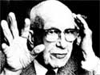

R. Buckminster Fuller died at his wife Anne's bedside on Friday, July 1, 1983 ... 11 days short of putting in 88 years on this planet. Thirty-six hours later, Anne Hewlett Fuller?Bucky's companion and most ardent supporter for over 65 years-passed away, never having regained consciousness from the coma that brought her husband to her side at Good Samaritan Hospital in Los Angeles.
To capsulize Fuller's achievements and ideas in a few hundred words would be an impossible task. Over two dozen books and 25 U.S. patents attest to the seemingly boundless energy he put forth through even his later years (his most recent book, Grunch of Giants, was published just this year).
We hope those of you who are familiar with Fuller's work will find that the following short examples rekindle your enthusiasm for Bucky's far-reaching vision ... and, if you're a relative newcomer to his ideas, we hope that our sampling will encourage you to delve deeper.
Bucky was born on July 12, 1895?in Milton, Massachusetts- and his ancestors included the transcendentalist Margaret Fuller, the first publisher (in her literary magazine Dial) of Ralph Waldo Emerson and Henry David Thoreau. At age six, Bucky (as he preferred to be called) designed the tetrahedronal octet truss, using toothpicks and dried peas, but it took another 60 years for him to patent the design as the Octetruss.
In 1917 Buckminster Fuller took Anne Hewlett's hand in marriage. The couple's first child, Alexandra, was born in 1918, and-in an important way?Bucky's observation of, and love for, his daughter helped form his concepts of the perfection of childhood and of humanity's untapped potential. Alexandra's death, in 1922, precipitated the worst period in Bucky's life ... and a catharsis that would eventually lead to a complete revision of his way of thinking.
On a windy winter night on the Chicago shore of Lake Michigan, while on the verge of suicide, he reasoned: "You do not have the right to eliminate yourself; you do not belong to you. You belong to the universe."
Through 1926 and 1927, Fuller gave up speaking to anyone other than his new baby, Allegra, and sought to purge his mind of the precepts he'd developed in his first 30 years. In short, he attempted to become "the most unlearned person in the world".
"If I am to be 50 years ahead of my time I shall be safe. No one will interfere with me because I'll be so far ahead that I will pose no threat to all the people who have a vested interest in opposing progress. They'll just call me a nut."
In 1927 Fuller designed the 4D house, for which the name Dymaxion (dynamic, maximum, and ion) was given by Waldo Warren, a public relations man with Marshall Field's department store. Among its features were the following:
[1] a round design meant to reduce the vacuum Bucky theorized must develop behind a building in the wind
[2] a gray-water filtering and reuse system
[3] solid-waste recycling for fertilizer
[4] solar energy for heat
[5] a low-flow shower head that was called a "fogger"
[6] air-filled beds
[7] weight so low that Fuller hoped it could be moved by air (something he didn't see happen until 1954).
On March 4, 1933, Bucky began building the Dymaxion car, which, in his mind at least, was to serve as a developmental prototype for a more ambitious aircraft. The first working model was an aluminum?skinned three-wheeler, with an aerodynamic teardrop shape that allowed it to travel at 120 MPH with a 90-HP Ford V-8. (At the time' most cars required at least 300 HP to reach that speed.)
The Dymaxion car received a great deal of publicity, and investors and workers alike anticipated a bright economic future. But Bucky had learned what he needed from the development of his theories and-in the face of considerable resistance from others?cast the project aside.
"I learned very early and painfully that you have to decide at the outset whether you're trying to make money or to make sense, as they are mutually exclusive.' "
Fuller's first book, Nine Chains to the Moon, was finished in 1937, but J.B. Lippincott refused to publish it because of a chapter devoted to Einstein's relativity theory. The noted physicist had claimed that there were only eight people in the world who were capable of understanding his theories, and Bucky's name wasn't on the list.
The aspiring author then requested that Lippincott forward a copy of the manuscript to Einstein, to see if that gentleman would be willing to expand his list. The reply came in the form of a request from Einstein to meet Fuller. After giving his approval of the disputed chapter, the respected scientist said:
"Young man, you amaze me. I cannot conceive of anything I have ever done as having the slightest practical application. I evolved all this in the hope that it might be of use to cosmogonists and astrophysicists in gaining a better understanding of the universe, but you appear to have found practical applications for it."
During the late 1940's, Bucky was busy working out the calculations for what would be his most famous invention, the geodesic dome. At Black Mountain College, not far from MOTHER's home, the first successful dome was built in 1949. By the mid-1950's, the Harvard dropout was receiving honorary degrees right and left, and was much in demand as a lecturer.
Bucky and Anne were able to build their own geodesic home in Carbondale, Illinois, and the sometimes-poet dedicated this humorous take-off on "Home on the Range" to it:
Let architects sing of aesthetics that bring
Rich clients in hordes to their knees
Just give me a home in a great circle dome
Where the stresses and strains are at ease.
Roam home to a dome, where
Gothic and Roman once stood
Now chemical bonds alone guard our blondes
And even the plumbing looks good.
The late 1960's turmoil eventually led to Bucky's leaving Carbondale, and he resisted becoming a part of the political upheaval of the time ... as always, he abhorred the role of guru. His concern for the world grew more strident, though, as expressed in the volumes Critical Path and Grunch (Gross Universal Cash Heist) of Giants.
In those works, Bucky expressed his opinion that free enterprise works by "ruthless, but often polite, decimation of the unsupportable fractions [of humanity], or leaving the unsupportable fractions to their unhappy fate."
Socialism, on the other hand, he saw as "the theory of austerity for all and sharing of inadequacy with slow mutual approach to certain, untimely demise."
"Every child is born a genius. It is my conviction, from having watched a great many babies grow up, that all humanity is born a genius and then becomes de-geniused very rapidly by unfavorable circumstances and by the frustration of all their built-in capabilities."
"We say sunset ... but there is no sunset ... if you back up and look at earth you see the earth turns."
|
 |
|
|